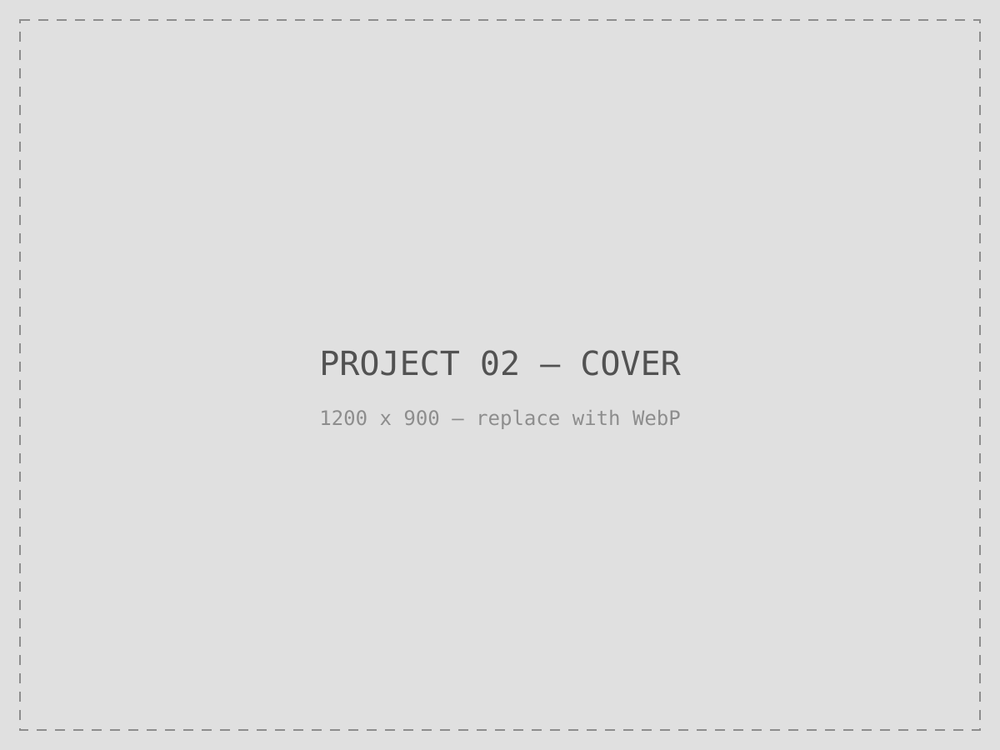

UX Designer specializing in Visual/UI Design, Design Systems & WCAG 2.2 Accessibility — closing the gap between Figma and production.
I design and engineer design systems for enterprise products — from token architecture in Figma to component code in production. At Wipfli, I built the Blueprint Design System end to end: adopted across 6 products, remediated to zero WCAG 2.2 violations, and structured well enough to power an AI-generated frontend that hit an 80% component match rate in 7 days.
Highlights
- 6 products Blueprint Design System adoption
- 80% match · 7 days AI-generated frontend POC
- 35 → 0 WCAG 2.2 violations remediated
- 14 → 1 CSS files consolidated
- $35k Sponsorship driven, Incridea 2022
Five projects, closing the loop from Figma to production.
-

Blueprint Design System
Five products, no shared design language, no bridge between Figma and code — I built the system that fixed all three.
-
AI-generated frontend POC
An LLM didn't build this frontend. I built the conditions under which it could, then directed it precisely.
-

WCAG 2.2 remediation at scale
35 violations, 8 Critical, during a live migration — down to zero, with the prevention mechanism built into the design system itself.
-

Front-end modernization
14 fragmented CSS files, 10+ pages, 25+ components — consolidated into one scalable architecture without regressions.
-
AI in UX design-to-development
Not just AI tool usage — a firm-wide framework, formally adopted, presented to technical directors and partners.